{kind=link}
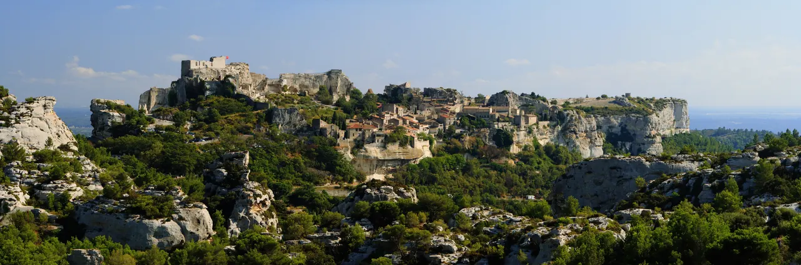
Les Baux-de-Provence
알피유(Alpilles) 산맥 해발 245m 석회암 절벽 위에 우뚝 솟은 중세 독수리 요새 마을. 자연 암반과 성벽이 하나로 결합된 레보 성채(Château des Baux) 폐허와 올리브 계곡 대파노라마.

Avignon에서는 교황청이 남긴 중세 도시 구조를 보고, Alpilles에서는 Saint-Rémy의 수요시장과 Les Baux의 석회암 성채를 경험한다. 이어지는 근교일에는 로마 수로와 도시 유산, Arles의 로마·중세 흔적을 연결한다.
시내에서는 차 없이 성벽 안을 걷고, 하루는 Uzès와 Pont du Gard를 중심으로 근교를 이동하며, 하루는 TER로 Arles를 다녀온다. Avignon 자체는 Les Halles, Palais des Papes, Rocher des Doms와 Pont Saint-Bénézet를 한날에 연결한다.
근교일은 이동 자체가 길기 때문에 방문지를 추가하기보다 각 날의 핵심 동선을 유지한다.
| 날짜 | 핵심 일정 |
|---|---|
| 9/16 수 | Gordes 체크아웃 · Saint-Rémy 수요시장 · Les Baux · Avignon 체크인 · 생활권 정리 |
| 9/17 목 | Uzès · Pont du Gard · Nîmes · 렌터카 반납 |
| 9/18 금 | Arles 당일치기 (TER 이동) |
| 9/19 토 | Les Halles · Palais des Papes · Rocher des Doms · Pont Saint-Bénézet |
| 9/20 일 | Avignon 체크아웃 · TGV 이동 · Lyon 정착 |
상세 시각, 이동, 식사와 선택 일정은 각 날짜의 Day 페이지에서 확인한다.
현지 관광안내소가 종이로 나눠 주는 지도다. 목적지를 찍어 찾아가는 지도가 아니라, 이 고장에서 무엇이 유명하고 서로 얼마나 떨어져 있는지를 한눈에 보여 주는 쪽이다. 눌러서 크게 열면 확대된다 — 인터넷이 끊겨도 열린다.
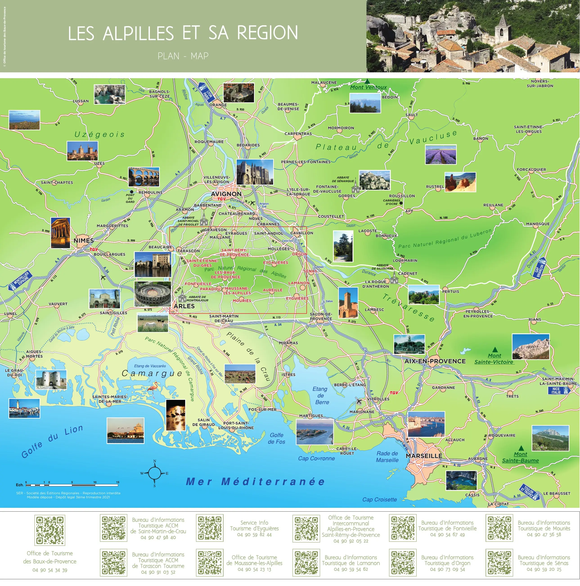
이번 조사에서 가장 값어치 있는 한 장. 님·퐁뒤가르·위제스·아비뇽·아를·레보·생레미·고르드·루시용·세낭크·엑스·마르세유·카시스·카마르그·몽방투가 모두 사진과 함께 제자리에 박혀 있다. 프로방스에서 무엇이 어디에 있는지를 한 번에 잡는 용도.
저작권 · © Office de Tourisme des Baux-de-Provence. All rights reserved. 권리자: Office de Tourisme des Baux-de-Provence
공식 배포 파일에서 지도 면만 뽑아 해상도를 낮춰 비상업적 개인 여행 참고용으로 수록한다. 권리자·발행처·판본·원본 주소를 함께 표시하고, 요청이 있으면 내린다.
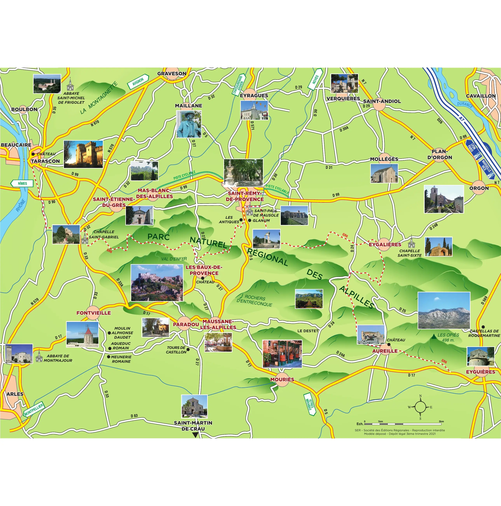
위 지도의 확대면. 레보·생레미·글라눔·생폴드무솔(반 고흐의 요양원)·퐁비에유·몽마주르 수도원이 산괴 안에서 어떻게 배치돼 있는지를 본다. 알피유 하루의 순서는 이 장에서 나온다.
저작권 · © Office de Tourisme des Baux-de-Provence. All rights reserved. 권리자: Office de Tourisme des Baux-de-Provence
공식 배포 파일에서 지도 면만 뽑아 해상도를 낮춰 비상업적 개인 여행 참고용으로 수록한다. 권리자·발행처·판본·원본 주소를 함께 표시하고, 요청이 있으면 내린다.
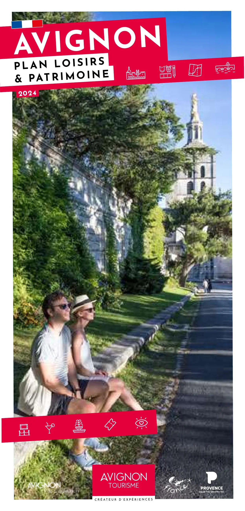
성벽 안 전체에 기념물·미술관 번호 M1~M18 이 붙어 있고 유네스코 등재 구역이 따로 표시된다. 테마 산책 코스 네 개에 성벽·운하·섬 코스가 더해져 있어 사흘을 어떻게 쪼갤지 정할 수 있다. 교황청·생베네제 다리·시계탑 광장·로셰 데 돔·프티 팔레·염색공 골목이 모두 이 한 장 안이다.
저작권 · © Avignon Tourisme · Office de Tourisme d'Avignon. All rights reserved. 권리자: Avignon Tourisme · Office de Tourisme d'Avignon
공식 배포 파일에서 지도 면만 뽑아 해상도를 낮춰 비상업적 개인 여행 참고용으로 수록한다. 권리자·발행처·판본·원본 주소를 함께 표시하고, 요청이 있으면 내린다.
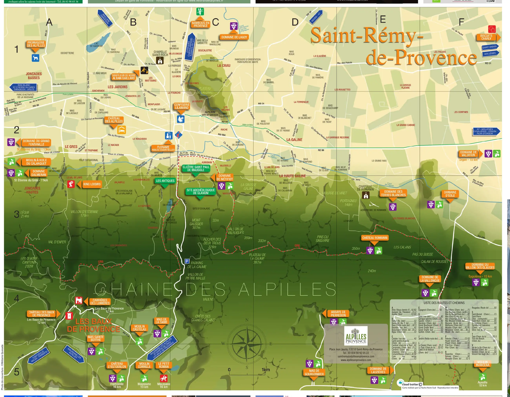
마을과 알피유 산자락을 같이 담았다. 레 앙티크와 글라눔 유적, 생폴드무솔, 카리에르 데 뤼미에르, 그리고 올리브 방앗간과 와이너리 위치가 표시돼 있다.
저작권 · © Office de Tourisme Alpilles en Provence. All rights reserved. 권리자: Office de Tourisme Alpilles en Provence
공식 배포 파일에서 지도 면만 뽑아 해상도를 낮춰 비상업적 개인 여행 참고용으로 수록한다. 권리자·발행처·판본·원본 주소를 함께 표시하고, 요청이 있으면 내린다.
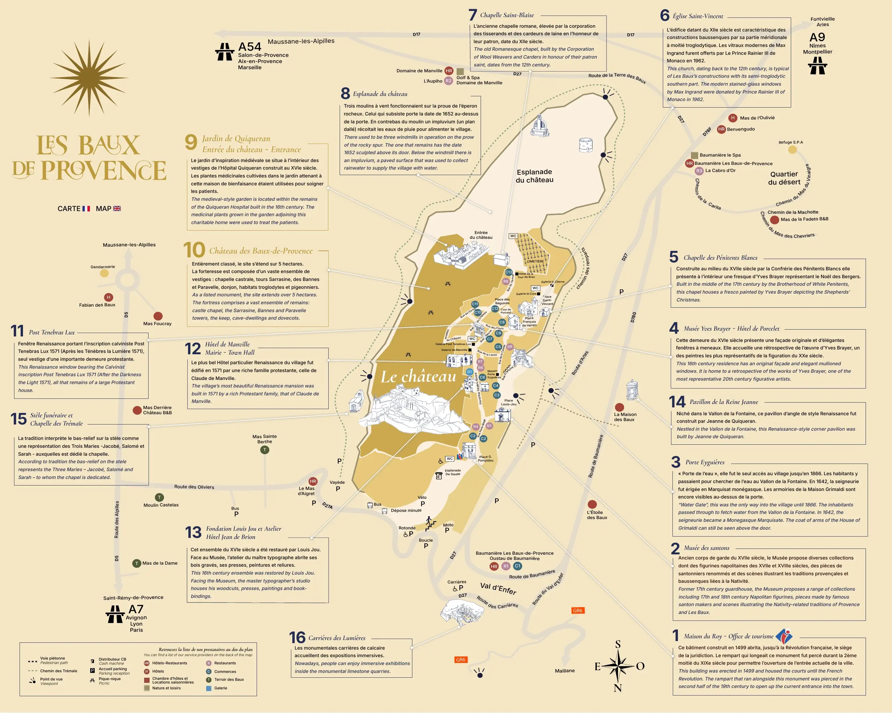
바위 위 마을을 새가 내려다본 각도로 그렸다. 볼거리 16곳에 번호(불어·영어)가 붙어 있어 성채까지 오르는 길에 무엇을 지나치는지 미리 알 수 있다.
저작권 · © Office de Tourisme des Baux-de-Provence. All rights reserved. 권리자: Office de Tourisme des Baux-de-Provence
공식 배포 파일에서 지도 면만 뽑아 해상도를 낮춰 비상업적 개인 여행 참고용으로 수록한다. 권리자·발행처·판본·원본 주소를 함께 표시하고, 요청이 있으면 내린다.
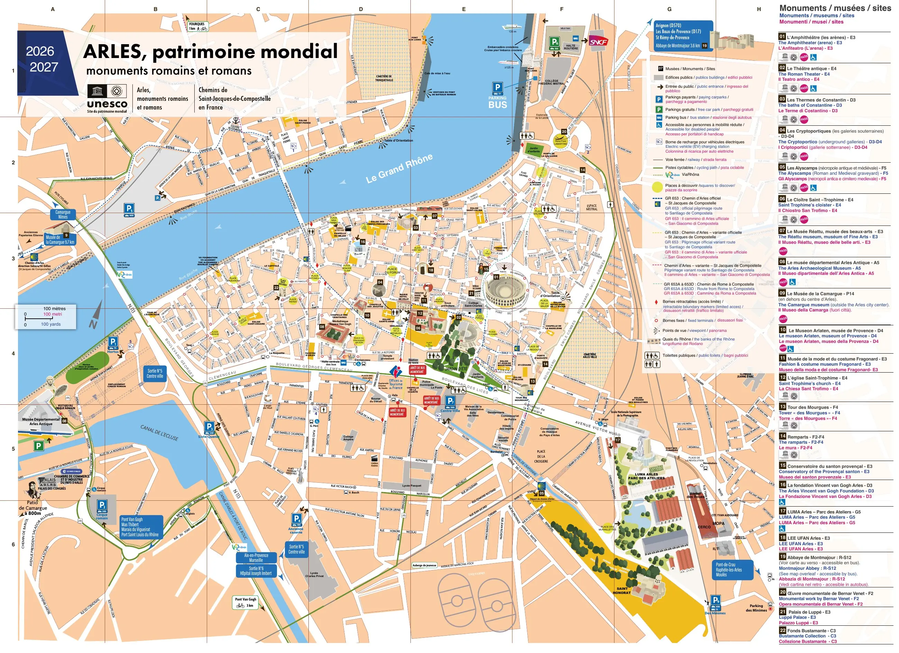
유네스코 등재 로마·로마네스크 기념물 22곳에 번호가 붙어 있다. 원형경기장·고대극장·생트로핌 성당·알리스캉·콘스탄티누스 목욕장이 도심 안에서 걸어 이어지는 거리라는 것이 보인다.
저작권 · © Office de Tourisme d'Arles Camargue. All rights reserved. 권리자: Office de Tourisme d'Arles Camargue
공식 배포 파일에서 지도 면만 뽑아 해상도를 낮춰 비상업적 개인 여행 참고용으로 수록한다. 권리자·발행처·판본·원본 주소를 함께 표시하고, 요청이 있으면 내린다.
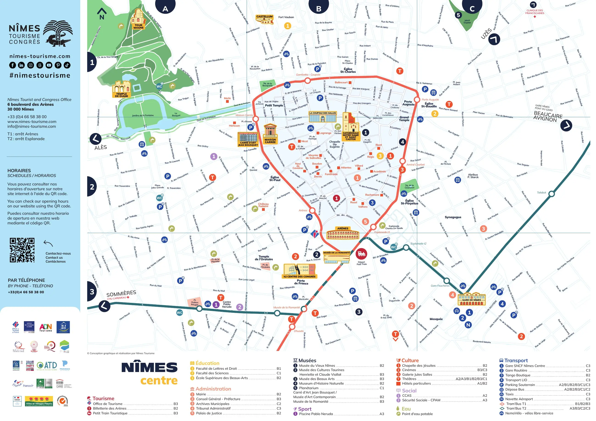
주요 건물을 삽화로 세워 그렸다. 아레나·메종 카레·마뉴 탑·퐁텐 정원이 어디 있고 트램버스 노선이 그 사이를 어떻게 지나는지가 같이 나온다.
저작권 · © Office de Tourisme de Nîmes (SPL AGATE). All rights reserved. 권리자: Office de Tourisme de Nîmes (SPL AGATE)
공식 배포 파일에서 지도 면만 뽑아 해상도를 낮춰 비상업적 개인 여행 참고용으로 수록한다. 권리자·발행처·판본·원본 주소를 함께 표시하고, 요청이 있으면 내린다.
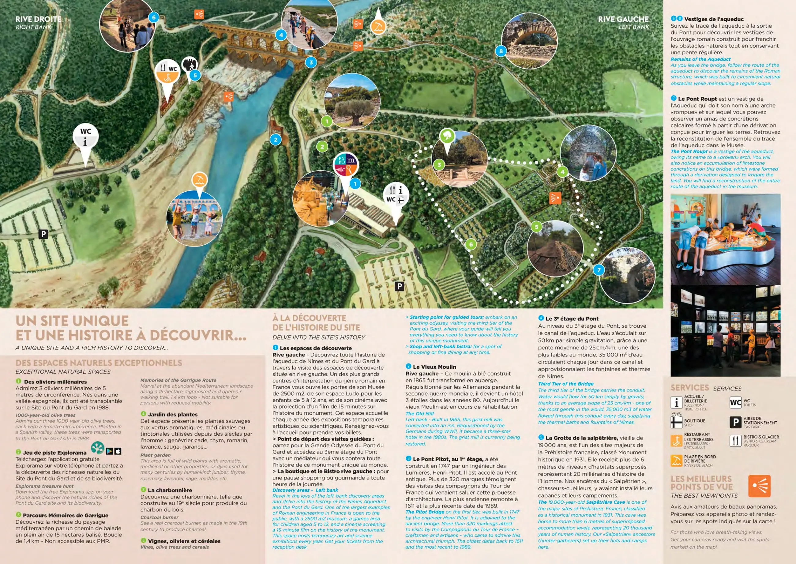
유적 전체를 회화식 조감도로 그렸다. 좌안·우안 주차장이 따로라는 것, 박물관과 뤼도가 좌안에 있다는 것, 메무아르 드 가리그 산책로가 1.4km 순환이라는 것, 그리고 사진이 가장 잘 나오는 전망 지점이 표시돼 있다.
저작권 · © EPCC Pont du Gard. All rights reserved. 권리자: EPCC Pont du Gard
공식 배포 파일에서 지도 면만 뽑아 해상도를 낮춰 비상업적 개인 여행 참고용으로 수록한다. 권리자·발행처·판본·원본 주소를 함께 표시하고, 요청이 있으면 내린다.

알피유(Alpilles) 산맥 해발 245m 석회암 절벽 위에 우뚝 솟은 중세 독수리 요새 마을. 자연 암반과 성벽이 하나로 결합된 레보 성채(Château des Baux) 폐허와 올리브 계곡 대파노라마.

14세기 가톨릭 교황청이 로마를 떠나 68년간 머물렀던 서유럽 최대의 중세 고딕 요새 궁전. 베네딕토 12세의 구궁전과 클레멘스 6세의 신궁전, 마테오 조바네티의 프레스코화와 히스토패드 3D 증강현실 복원.

12세기 론(Rhône) 강을 건너 교황령 아비뇽과 프랑스 왕국을 잇던 920m의 유일한 석조 다리. 소빙하기의 거센 홍수로 22개 아치 중 4개와 2층 생니콜라 예배당만 남은 유네스코 세계유산.

우제스의 외르 샘에서 고대 로마 식민도시 님(Nîmes)까지 50km를 오직 중력만으로 흐르게 한 기원 1세기 3층 로마 수도교. 높이 48.8m 세계 최고(最高)의 고대 수력 토목공학 걸작(유네스코 세계유산).

아비뇽 교황궁 북쪽에 솟아오른 해발 58m 백색 석회암 바위산 정상 공원. 론(Rhône) 강의 장대한 물줄기, 생베네제 다리, 생앙드레 요새, 몽방투를 360도로 내려다보는 아비뇽 최고의 파노라마 전망대.
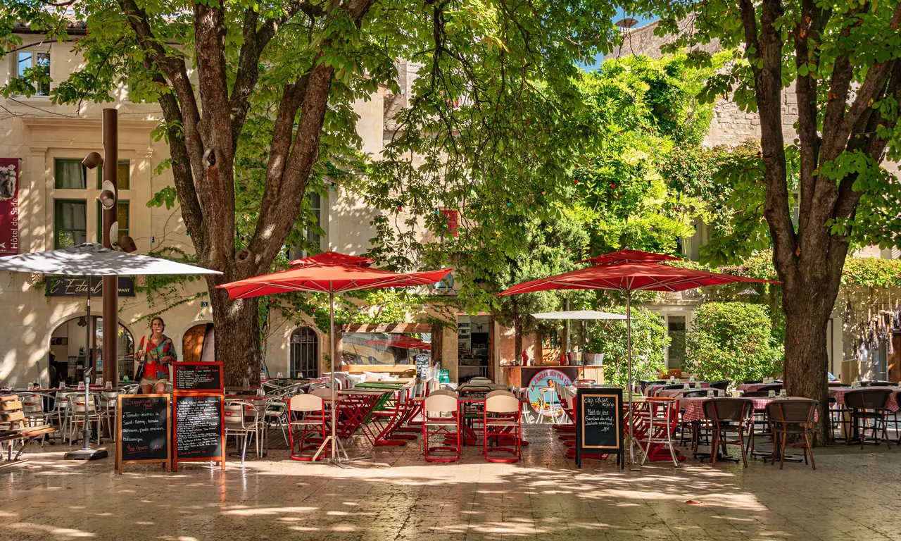
Alpilles 북쪽의 생활형 중심도시. 이번 일정에서는 수요일 시장, 구시가지, Van Gogh의 Saint-Paul-de-Mausole가 세 축이다.

프랑스 제1공작의 1,000년 공작성(Le Duché), 12세기 로마네스크 원형 피네스트렐 탑(Tour Fenestrelle), 석조 아케이드와 분수가 어우러진 에르브 광장(Place aux Herbes)의 우아한 예술과 역사의 도시.
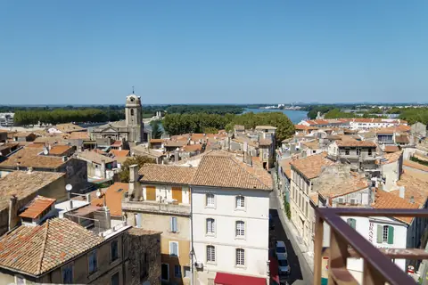
기원전 1세기 로마 제국의 거대한 원형 경기장과 고대 극장, 12세기 로마네스크 생트로핌 회랑, 1888년 빈센트 반 고흐가 300여 점의 불꽃같은 걸작을 쏟아낸 빛과 역사의 도시.
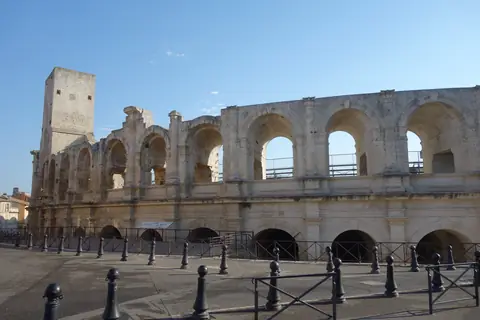
서기 90년 로마 제국이 축조한 2만 명 수용 규모의 2단 120개 아치 원형 경기장. 중세 200여 채 가옥이 들어선 요새 마을로 변신했던 굴곡진 역사와 현재도 카마르그 투우가 열리는 2,000년 현역 무대(유네스코 세계유산).
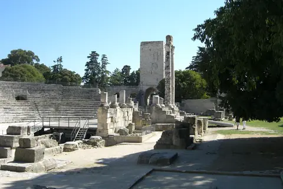
기원전 12년 아우구스투스 황제 치세에 지어진 1만 명 수용 규모의 고대 로마 극장. 사라진 거대한 무대 배경벽에서 홀로 살아남은 두 개의 대리석 기둥 '두 과부(Les Deux Veuves)'와 루브르 박물관 '아를의 비너스'의 원 출토지.
서기 70년경 로마 제국 플라비우스 왕조 시기 축조된 24,000명 수용 규모의 타원형 원형경기장. 2단 60개 아치 외벽과 내부 회랑, 관람석 구조가 로마 제국 영토 전체를 통틀어 가장 온전하게 보존된 2,000년 현역 투기장(프랑스 국립 역사기념물).
기원전 1세기 아우구스투스 황제의 양손자 가이우스와 루키우스 카이사르에게 헌정된 전 세계에서 가장 완벽하게 보존된 로마 제국 신전. 30개의 코린트식 기둥과 정교한 아칸서스 잎 부조가 빛나는 백색 석조 건축 걸작(2023년 유네스코 세계유산).

높이 15m 거대한 지하 백색 석회암 채석장 동굴 전체를 디지털 캔버스로 변모시킨 세계 최초·최대 규모의 몰입형 미디어 아트 공간. 7,000㎡ 암벽과 바닥을 감싸는 빛과 음악의 향연.

기원전 6세기 켈트 성소에서 헬레니즘 도시를 거쳐 로마 제국의 온천 휴양도시로 번영했던 거대한 고대 발굴 유적지. 갈리아에서 가장 완벽하게 보존된 기원전 1세기 로마 영묘와 개선문 '레 장티크(Les Antiques)'.

1889년 빈센트 반 고흐가 자진 입원하여 『별이 빛나는 밤』, 『붓꽃』 등 143점의 불후의 명작을 탄생시킨 11세기 로마네스크 수도원 요양원. 고흐의 복원된 병실과 평화로운 중세 수도원 회랑.
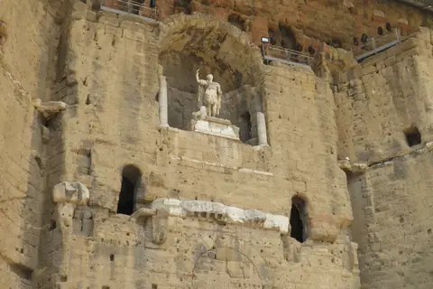
로마극장으로 유명한 북부 Vaucluse 도시. 유적은 뛰어나지만 일정에서 제외됐다 — 방향상 우회가 크다.

고대 로마 정치·경제의 중심지였던 포룸 터 위에 조성된 아를 구도심의 대표 광장. 빈센트 반 고흐의 명작 『밤의 카페 테라스』 무대(Café Van Gogh), 로마 신전 기둥이 박힌 오텔 노르-피뉘, 프레데리크 미스트랄 동상.

12세기 프로방스 로마네스크 석조 조각의 정점인 생트로핌 파사드와, 12세기 로마네스크 및 14세기 고딕 양식이 한 중정에서 극적으로 공존하는 사각형 수도원 회랑(유네스코 세계유산).

15세기 귀족 저택을 개조해 2014년 개관한 현대 미술 재단. 반 고흐의 혁신적인 예술 세계와 동시대 현대 미술 작가들의 대화, 옥상 테라스의 유리 설치 작품과 수준 높은 아트 북숍.

론(Rhône) 강변을 따라 파스텔톤 가옥과 덧창, 조약돌 골목이 이어지는 아를의 옛 어부와 뱃사공 주거 지구. 관광지 인파를 벗어난 조용한 로컬 생활권과 폴 두메르 광장의 아늑한 카페 테라스.
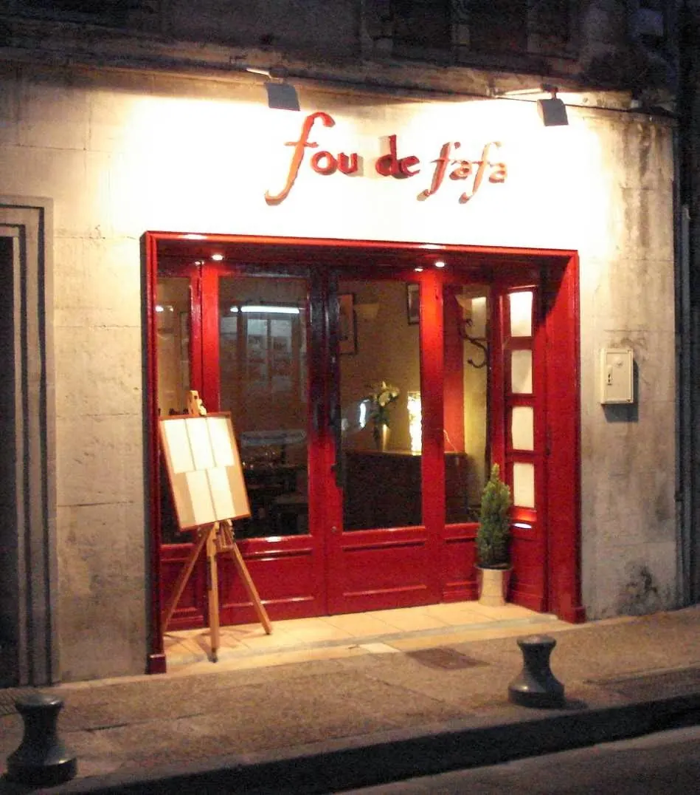
탕튀리에 운하 골목에 자리한 아늑하고 로맨틱한 프로방스 모던 비스트로. 친절한 호스피탈리티와 제철 코스 요리.
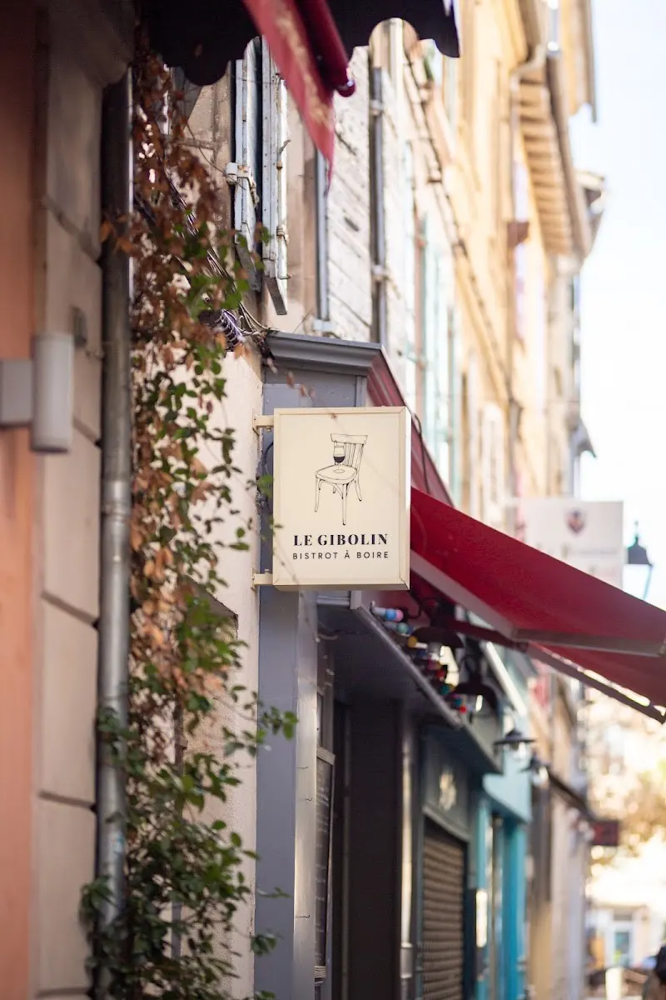
아를 로케트 역사 지구의 활기찬 골목 비스트로. 카마르그 황소 스튜(Gardianne de taureau)와 내추럴 와인.
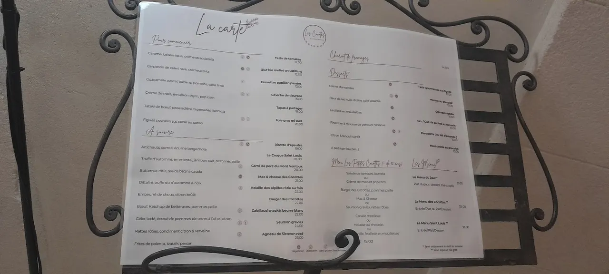
16세기 유서 깊은 수도원 회랑 안뜰 정원에서 즐기는 프랑스 무쇠 주물 냄비(Cocotte) 전통 가정식 비스트로.
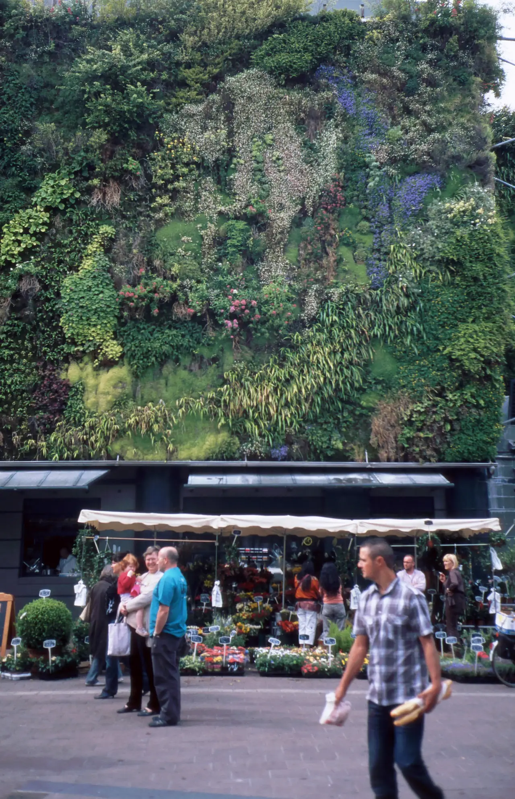
세계적인 식물학자 파트리크 블랑의 300㎡ 거대한 수직 정원(Mur Végétal) 외벽 아래 40여 개 프로방스 전통 식재료 좌판이 모인 아비뇽의 활기찬 실내 중앙 미식 시장.
아비뇽과 가르 지방의 식문화는 론강 평야의 농산물과 카마르그 습지, 지중해 연안의 풍부한 식재료를 활용한다.
아비뇽과 서부 프로방스는 론(Rhône) 남부 와인의 중심지다. 운전하는 날에는 마시지 않고 저녁 식사 때 선택한다.
Day 19 점심은 Saint-Rémy에 두고 Les Baux에서는 마을·성·전망에 시간을 쓴다. Orange는 일정에서 제외됐다. 그 밖의 아침은 Les Halles 시장 식재료나 로컬 카페를 활용한다.
5박(9/15 체크인–9/20 체크아웃) 거점은 성벽 안 도보권과 Avignon Centre역 접근성을 우선한다. 도착일에는 관리주차장과 생활권부터 안정시킨다.
Avignon 체류의 거점은 성벽(intra-muros) 안 도보 생활권이다. Day 19 도착일(Alpilles 경유)과 Day 20 근교 일정에는 렌터카를 쓰고, 이후 일정에는 차를 쓰지 않는다.
아침 장보기와 식사는 Les Halles 시장과 인근 상점을 이용하고, 숙소는 주방과 세탁 설비가 있는 곳을 기본으로 한다. 4박 동안 성벽 안을 걸어 다니며 생활 리듬을 유지한다.
Avignon 체류 중에는 성벽 남쪽 산책로나 론(Rhône) 강변, 바르틀라스 섬(Île de la Barthelasse) 방향으로 30–40분 정도 가볍게 걷거나 뛴다. 근교 당일치기 날에는 별도 운동을 넣지 않는다.
늦은 귀가 — 성벽 안은 도보 귀환이 기본이다. 늦거나 피로하면 Orizo 실시간 경로를 확인하되, T1이 Avignon TGV까지 간다고 가정하지 않는다.
Day 18 Gordes에서 L'Isle-sur-la-Sorgue를 거쳐 렌터카로 숙소 주차장 또는 지정 관리주차장에 바로 들어간다. 성벽 안 골목을 순환해 주차장을 찾지 않는다.
9.16(수) · Day 19 · Gordes · Saint-Rémy · Les Baux · AvignonDay 23 체크아웃 뒤 TGV로 Lyon 이동한다. 렌터카는 Day 20 저녁 반납 완료되어 아침 이동에 차량 반납 절차가 없다.
9.20(일) · Day 23 · Lyon성벽 안 도보가 힘들 때 쓰는 예외안; 이번 일정은 선구매하지 않음
숙소 주차가 불가능할 때만 검토; 짐 보관용 장기주차로 권하지 않음
Day 21 Arles 왕복; 실제 직행편과 귀환편 확인
교황궁, 광장, 시장과 주요 명소는 성벽 안 도보로 모두 연결된다. 시내 일정 동안에는 차량 통행 제한과 주차 부담을 피해 걷는 것을 기본으로 한다.
가르 지방 근교 일정에는 렌터카를 이용한다. 일정을 마친 뒤 저녁에 Avignon TGV역에서 차량을 최종 반납하여 이후 일정의 주차 부담을 없앤다.
Arles 당일치기는 Avignon Centre역에서 TER로 이동한다. 도착 후 구시가지는 걸어서 둘러본다.
체크아웃 후 시내에서 TGV역으로 이동해 TGV INOUI 열차를 탑승한다. 렌터카 반납이 이미 완료되어 아침 이동에 차량 절차가 없다.
성벽 안은 도보가 기본이다. 피로할 때의 bus·tram과 P+R 셔틀을 찾는 자료이며, T1이 Avignon TGV까지 연결된다고 읽지 않는다. Centre–TGV는 SNCF TER Virgule를 별도로 확인한다.